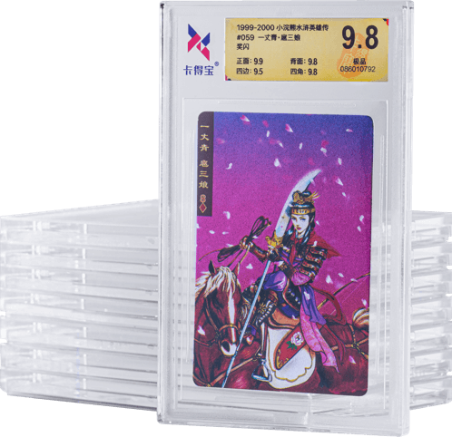
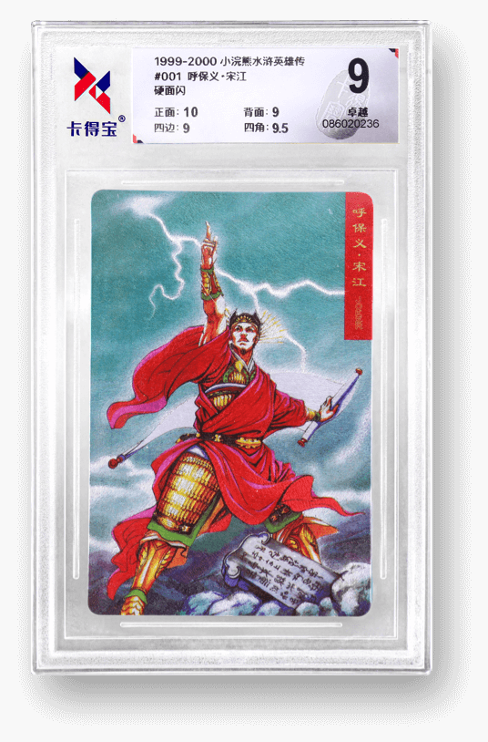
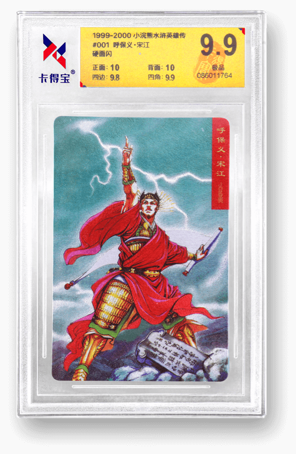
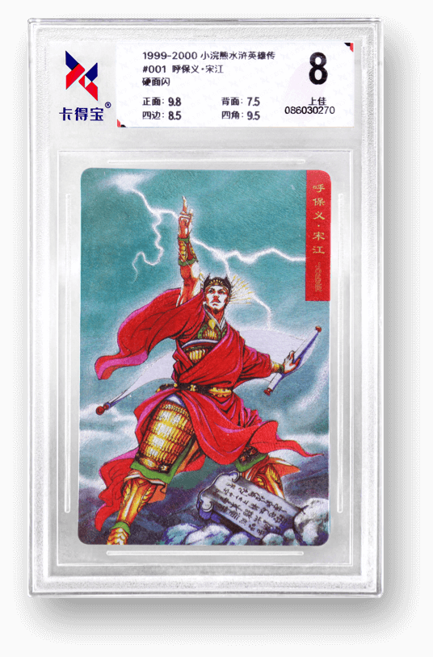
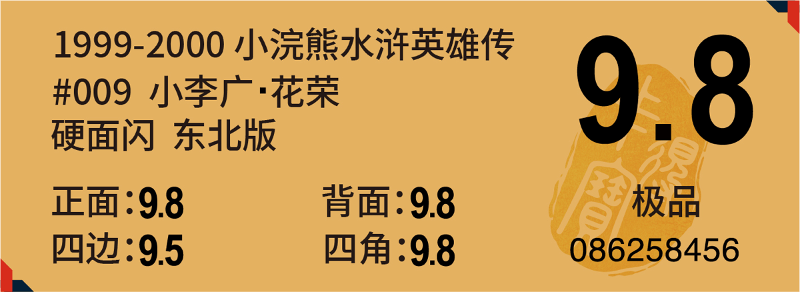
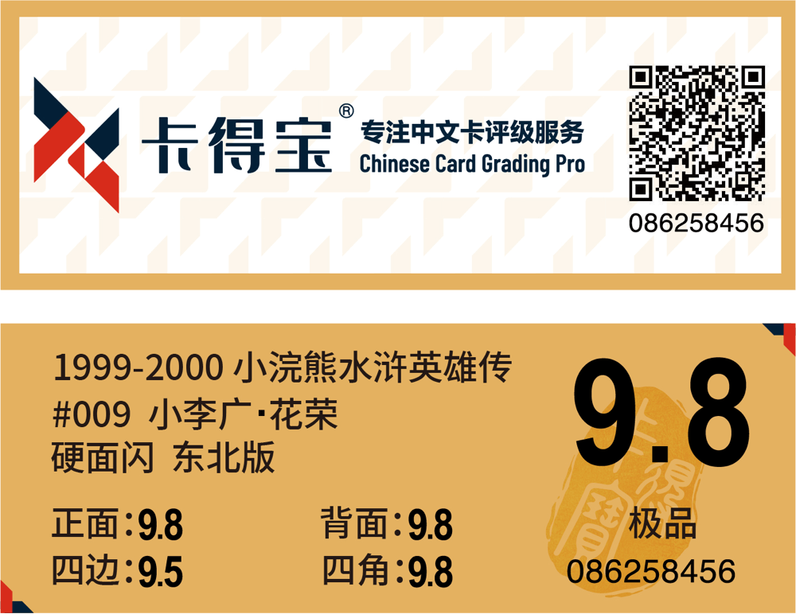
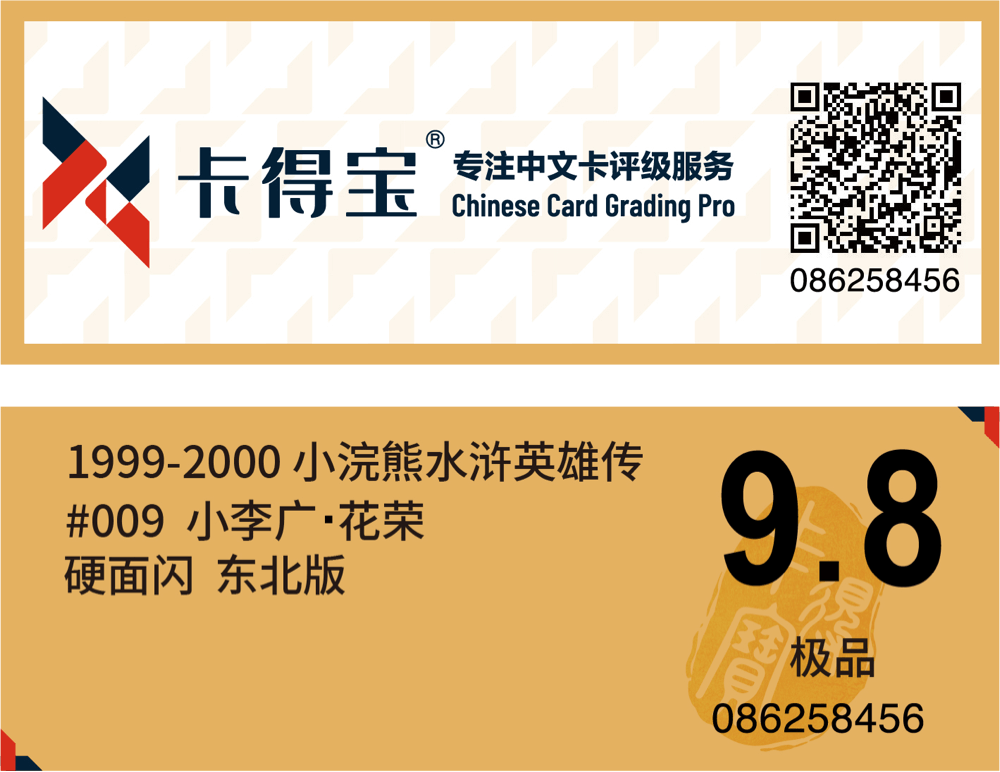
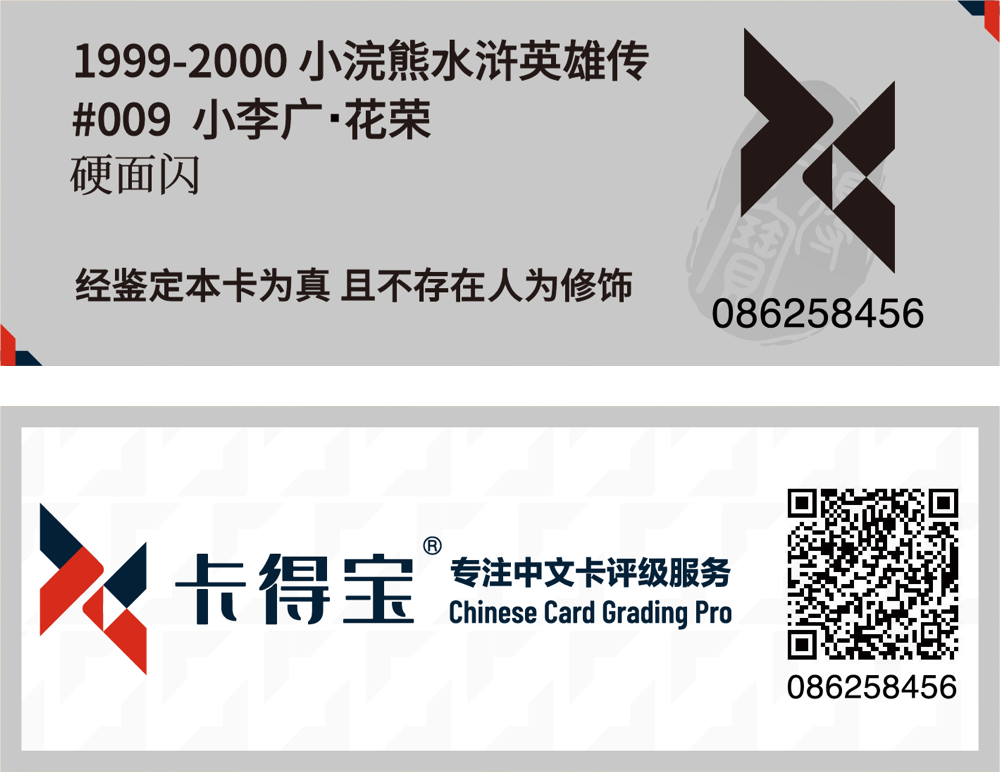

卡得宝
®
专用评级标签
卡得宝
®
精选上等材料，打造独特的三色标签体系，不仅使得卡片品相一目了然，而且能为评级卡片增色颇多，让心爱的藏卡更具观赏性。

独特的三色标签体系

银色标签，尊贵沉稳
此类颜色意味着卡片保存良好，略有瑕疵，不失为一张极具收藏价值的卡片。

金色标签，低调奢华
此类颜色意味着卡片的品相经过了最严格的检查，卡片保存非常完好，值得永久珍藏。

白色标签，简约质朴
此类颜色表明卡片有所损伤，但这并不能掩盖卡片中独一无二的故事，以及所有者对其的情感。
标准化的分级工具，专业化的评级服务
卡得宝
®
评级标签由知名设计师融合中国传统元素，联手国内顶级防伪厂调校印制，融合隐形防伪、微缩雕刻、可变信息匹配等多重防伪技术，打造一卡一码、扫码可查且暗藏玄机的防伪评级标签。
评级标签正面

隐形防伪
特殊材质及专属颜色，极难仿制
微缩雕刻
评级标签正面
专用配色的卡得宝logo
可用于验证真伪的二维码
为客户精心定制的多种服务
01
卡得宝
®
评级有小分标准标签样图
卡得宝
®
根据符合中文卡特征的四个关键类别进行评分：正面、背面、四边、四角。同时《卡得宝
®
中文卡评级标准》的编写和发布确保了卡得宝
®
评级的权威性和一致性。
卡得宝
®
评级标签小分的独特功能之一，是它提供了卡片的具体分数信息，不会让您对卡片最终评分感到困惑。
在评级师确定您卡片的总分前，将仔细考量每一个关键类别的分数（即小分）。


02
卡得宝
®
评级无小分标签样图
卡得宝
®
同时也提供无小分标签。卡片将按照
03
卡得宝
®
评级仅封装标签样图
卡得宝
®
还推出了「仅封装」服务。
在此服务中，我们不对卡片的品相给出具体分数，所以评级标签中仅提供卡片的相关信息，以及卡得宝
®
出具的真实证明。 换句话说，我们将首先对卡片的真伪进行鉴定：如鉴定为真，则对卡片进行封装；如鉴定为假，则原样退回用户。本服务中的评级标签统一采用银色标签。
